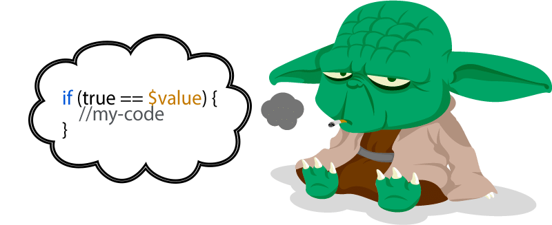
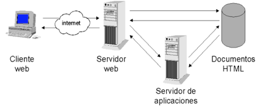

EI1036- Tecnologías Web para los Sistemas de Información (2020/2021)
Manual PHP: http://php.net/manual/es/
Guia Estilos: https://www.php-fig.org/psr/psr-2/
--

Comparaciones al revés para evitar equivocarnos.
php.exe "./bienvenidos.php"
>>php -a
$hola="Adios";
$echo $hola
Servidor web: https://asociacionpiruleta.cloudaccess.host/PHP/T2/holaMundo.php
Servidor web local:
php [options] -S <addr>:<port> [-t docroot]
>> php -S localhost:8080
--
<?php
$var = "test";
echo "$var"; // Salida:"test“
echo "\$var"; // Salida:" "$var"
echo '$var'; // Salida:" "test"
# otro comentario hasta el final de la línea
// este también es de línea
/* comento
varias líneas */
?>
--
Sintaxis: array ([clave =>] valor, ...)
$medidas = array (10, 25, 15);
echo $medidas[0];
$color = array ('rojo'=>101, 'verde'=>51, 'azul'=>255);
#Acceso:
echo $color['rojo']; // No olvidar las comillas
echo array_keys($color);
¿Cómo enviar mensajes a la salida estándar?
--
No es obligatorio el uso de paréntesis ya que no son realmente una función.
echo "Hola mundo";
echo "Hola ", "mundo"; //dos argumentos
print "Hola mundo";
print "Hola ". "mundo"; // el operador '.' concatena cadenas
$x='equis';
$_x = &$x; //referencia a $x
$_x ='x';
echo $x; //salida: x
echo $_x; //salida: x
$a = "hola";
$$a = "mundo"; //nombrar una variable con otra variable
print "$a $hola\n"; //salida: hola mundo
print "$a ${a}s\n"; //salida: hola hola //utilizaremos ${} para evitar errores
print "$a ${$a}"; //salida: hola mundo //podemos acceder al valor de una variable ($mundo) nombrada en otra ($a)
--
is_array(), is_bool(), is_null(), is_object(), is_resource(),
is_scalar(),is_string(),is_float(), is_integer(), is_numeric(),is_nan()
--
function suma ($x, $y)
{
$s = $x + $y;
return $s;
}
Salida:
$a=1;
$b=2;
$c=suma ($a, $b);
print $c;
--
function incrementa (&$a)
{
$a = $a + 1;
}
$a=1;
incrementa ($a);
print $a; // Muestra un 2
--
function muestranombre ($nombre, $titulo= "Sr.")
{
print "Estimado $titulo $nombre:\n";
}
muestranombre (“Fernández”);
muestranombre (“Fernández”, "Prof.");
Salida:
Estimado Sr. Fernández:
Estimado Prof. Fernández:
--
class Myclass{
const CONST_VALUE = 10;
public $numero=5;
function dameNumero(){
return self::CONST_VALUE*$this->numero;
}
function llamoDame(){ return self::dameNumero();}
}
$classname = 'Myclass';
echo "<p>",$classname::CONST_VALUE,"</p>"; // A partir de PHP 5.3.0
echo "<p>",Myclass::CONST_VALUE,"</p>";
$datos=new Myclass();
$datos->numero=15;
echo "<p>",$datos->dameNumero(),"</p>";
echo "<p>",$datos->llamoDame(),"</p>"; //Da error
echo "<p>",Myclass::dameNumero();
:: es el operador de Resolución de Ámbito, el cual permite acceder a elementos estáticos/constantes y sobrescribir propiedades o métodos de una clase.-> permite acceder a las propiedades y métodos de un objeto.--
$this es una variable especial que auto-referencia al objeto para acceder a sus métodos y propiedades.self y parent: son pseudo-variables para acceder a una propiedad o método de una clase.$this-> para hacer referencia al objeto (instancia) actual, y self:: para referenciar a la clase actual.$this->nombre
self::nombres
--
Version php S.O. != Apache

Seguridad: Ficheros sensibles estar fuera de la raíz (docroot-httpdocs) del servidor web.
https://asociacionpiruleta.cloudaccess.host/PHP/Lab/P1/portal.php?action=listar
Analiza la URL.
Fichero con HTML con php:
bienvenido.php
<body>
<p>Inicio</p>
<?php
$nombre = "Ana";
print(" <P>Hola, $nombre</P>");
?>
<p>Fin</p>
>>php -S localhost:8080
--
Apache http://httpd.apache.org/docs/current/es/
--
https://geekflare.com/es/lamp-lemp-mean-xampp-stack-intro/
--
Variables predefinidas en PHP
Están disponibles en todos los ámbitos.
$GLOBALS — Array con todas las variables disponibles en el ámbito global
--
https://asociacionpiruleta.cloudaccess.host/PHP/T2/tutoPhp.php
<form action="procesar.php" method="post">
Sexo:
<INPUT TYPE="radio" NAME="sexo" VALUE="M" CHECKED >Mujer
<INPUT TYPE="radio" NAME="sexo" VALUE="H">Hombre
<INPUT TYPE="submit">
</form>
#Procesar.php
<?PHP
$sexo = $_REQUEST["sexo"];
print ($sexo);
?>
--
Simulando PETICIONES POST con parámetros
curl --data "param1=value1¶m2=value2" http://hostname/resource
--
<INPUT TYPE="checkbox" NAME="extras[]" VALUE="garaje" CHECKED>Garaje
<INPUT TYPE="checkbox" NAME="extras[]" VALUE="piscina">Piscina
<INPUT TYPE="checkbox" NAME="extras[]" VALUE="jardin">Jardín
<?php
$extras = $_REQUEST["extras"];
foreach ($extras as $extra)
print ("$extra<BR>\n");
?>
--
<INPUT TYPE="button" NAME="actualizar" VALUE="Actualizar datos">
<?php
$actualizar = $_REQUEST["actualizar"];
if ($actualizar)
print ("Se han actualizado los datos");
?>
--
Idiomas:
<SELECT MULTIPLE SIZE="3" NAME="idiomas[]">
<OPTION VALUE="ingles" SELECTED>Inglés
<OPTION VALUE="francés">Francés
<OPTION VALUE="alemán">Alemán
<OPTION VALUE="holandés">Holandés
</SELECT>
<?php
$idiomas = $_REQUEST["idiomas"];
foreach ($idiomas as $idioma)
print ("$idioma<BR>\n");
?>